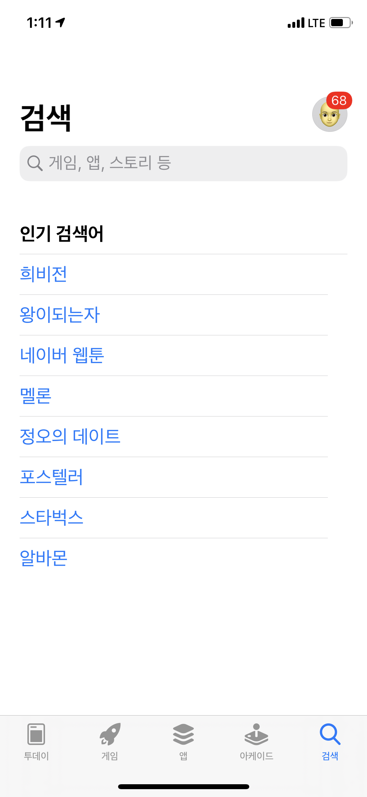

아이폰 에서는 폰트 크기 변경을 위해 설정화면을 제공하고 있습니다.
위치 : 아이폰 - 설정 - 디스플레이 및 밝기 - 텍스트 크기
이는 접근성에 대한 설정으로써 아이폰 앱 내에서 더 큰 폰트를 원하거나 작은 폰트를 설정하고 싶을 때 사용됩니다.
앱스토어에서 텍스트 크기를 변경해봤습니다. 검색 타이틀 및 인기 검색어 항목에서 폰트 사이즈 변경이 되는걸 확인 할 수 있습니다.
이처럼, 특정 라벨에 대해서 유동적인 텍스트 크기를 지정하려고 할 때, 아래 방법으로 사용할 수 있습니다.

구현
적용하려는 UILabel에 아래 설정을 추가해 줍니다.
1 2 3 4 5 6 7 8 9 10 11 12 13 14 15 16 17 18 19 20 21 22
| class ViewController: UIViewController { @IBOutlet private weak var headlineLabel: UILabel! @IBOutlet private weak var bodyLabel: UILabel! override func viewDidLoad() { super.viewDidLoad() headlineLabel.adjustsFontForContentSizeCategory = true bodyLabel.adjustsFontForContentSizeCategory = true configureFonts() } override func traitCollectionDidChange(_ previousTraitCollection: UITraitCollection?) { configureFonts() } func configureFonts() { headlineLabel.font = UIFont.preferredFont(forTextStyle: .headline) bodyLabel.font = UIFont.preferredFont(forTextStyle: .body) } }
|
UITableView에서 구현방법
UITableView내에서 유동적인 폰트사이즈 표현을 위한 구현 방법입니다.
Cell 높이가 변경가능해야 하므로 tableView 설정 시 rowHeight을 .automaticDimension으로 설정합니다.
1 2 3 4 5 6 7 8 9 10 11 12 13 14 15 16 17 18
| class ViewController: UIViewController { @IBOutlet private weak var tableView: UITableView! override func viewDidLoad() { super.viewDidLoad() setupTableView() } func setupTableView() { tableView.register(CustomTableViewCell.self, forCellReuseIdentifier: "CustomTableViewCell") tableView.delegate = self tableView.dataSource = self tableView.estimatedRowHeight = 32 tableView.rowHeight = UITableView.automaticDimension } }
|
1 2 3 4 5 6 7 8 9 10 11 12 13 14 15 16 17 18 19 20 21 22
| class CustomTableViewCell: UITableViewCell { @IBOutlet private weak var titleLabel: UILabel! @IBOutlet private weak var descriptionLabel: UILabel! override func awakeFromNib() { super.awakeFromNib() titleLabel.adjustsFontForContentSizeCategory = true descriptionLabel.adjustsFontForContentSizeCategory = true configureFonts() } override func traitCollectionDidChange(_ previousTraitCollection: UITraitCollection?) { configureFonts() } func configureFonts() { titleLabel.font = UIFont.preferredFont(forTextStyle: .body) descriptionLabel.font = UIFont.preferredFont(forTextStyle: .caption1) } }
|
폰트 디자인
기본 폰트 사이즈는 Medium 기준으로 작성합니다.
사용자 접근성 을 고려한 화면 디자인을 할 경우, 적절한 폰트크기를 지정하여 설계하면 됩니다.\
출처 :
https://developer.apple.com/design/human-interface-guidelines/ios/visual-design/typography/
https://stablekernel.com/supporting-accessibility-larger-text-in-ios/
|
Extra Small |
Small |
Medium |
Large |
Extra Large |
Extra Extra Large |
Extra Extra Extra Large |
| Title 3 |
17 |
18 |
19 |
20 |
22 |
24 |
26 |
| Title 2 |
19 |
20 |
21 |
22 |
24 |
26 |
28 |
| Title 1 |
25 |
26 |
27 |
28 |
30 |
32 |
34 |
| Headline |
14 |
15 |
16 |
17 |
19 |
21 |
23 |
| Footnote |
12 |
12 |
12 |
13 |
15 |
17 |
19 |
| Caption 2 |
11 |
11 |
11 |
11 |
13 |
15 |
17 |
| Caption 1 |
11 |
11 |
11 |
12 |
14 |
16 |
18 |
| Callout |
13 |
14 |
15 |
16 |
18 |
20 |
22 |
| Body |
14 |
15 |
16 |
17 |
19 |
21 |
23 |
테스트
시뮬레이터 및 기기에서 폰트 사이즈 테스트를 진행할 수 있습니다.
시뮬레이터
Xcode를 통해 폰트 사이즈 변경이 잘 되는지 확인해볼 수 있습니다.
시뮬레이터에서 앱을 실행 후 Xcode - Open Developer Tool - Accessibility Inspector를 실행합니다.
Accessibility Inspector는 사용자 접근성에 대한 다양한 테스트를 진행해 볼 수 있는 툴입니다.
Accessibility Inspector에 대한 자세한 설명을 아래 영상을 참고해 주세요
참고: https://developer.apple.com/videos/play/wwdc2019/257/
실행 후 왼쪽 상단에서 현재 활성화 된 시뮬레이터를 선택합니다.
이후 맨 오른쪽에 톱니바퀴 모양 설정 버튼을 클릭하면 앱에서 테스트 해 볼 수 있는 다양한 기능이 나옵니다.
이중에서, 제일 아래 Font size항목이 보이고 size를 조절해 가면서 테스트 해볼 수 있습니다.